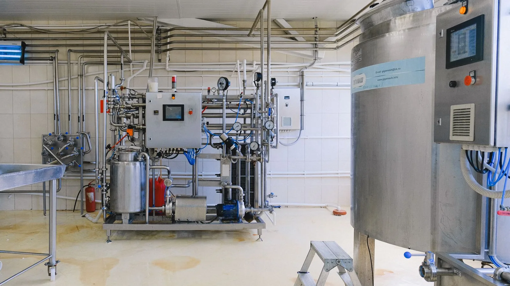
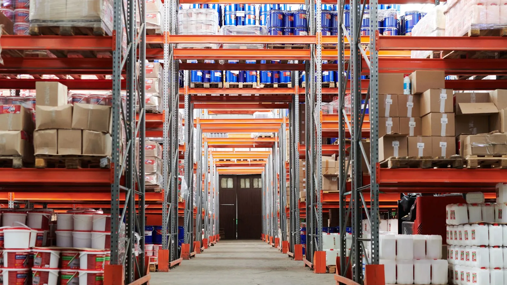

공익 프로그램 구상
- ARTISM
- 기초 음악 교육과 수료팀의 찾아가는 연주회
- 교육·자립
- 장학, 진로 탐색, 청년 멘토링 구상
- 지역 협력
- 지역 기관과 함께 검토하는 재난 교육과 구호
현재는 준비 단계입니다. 모집과 기부 접수 일정은 준비가 끝난 뒤 안내합니다.
다른 언어는 새 탭의 Google 번역으로 열립니다. 자동번역에는 오류가 있을 수 있으며, 첨부 PDF와 이미지 속 글자는 이 메뉴로 번역되지 않습니다.
Google 번역 상단에서 추가 언어를 선택할 수 있습니다. 열리지 않으면 Chrome·Edge의 페이지 번역 기능을 이용해주세요. 지역에 따라 서비스 이용이 제한될 수 있습니다.
Google 웹사이트 번역 열기 ↗WORLD MAKING MEMBERS × GCSME
조사·전략·제안서·디자인·웹·마케팅·영업 운영을 하나의 실행계획으로 연결합니다. 프로젝트마다 담당자, 산출물, 일정과 비용을 합의하고 진행합니다.
플레이그라운드에서 아이디어를 시험하고, GOV RADAR에서 공식 정보를 확인합니다. WMM과 사업 실행을 준비하고, 월드미라클메이커스에서 공익 프로그램 구상을 살펴볼 수 있습니다.
GOV RADAR에서 공고 원문과 마감을 확인한 뒤, WMM과 자격·준비 자료·수행 범위를 협의할 수 있습니다.
현재는 준비 단계입니다. 모집과 기부 접수 일정은 준비가 끝난 뒤 안내합니다.
화면이 잘려 보이면 전체 화면에서 지원사업 지도 열기
WMM AI · BUSINESS OPERATIONS
AI의 속도와 담당자의 검토를 결합합니다. 업무마다 입력자료, 산출물, 검수 기준을 정해 진행합니다.
시장·수요자·근거 자료를 확인하고, 실행할 가치가 있는 사업부터 좁힙니다.
시장 검토서 · 준비자료 목록기업자료를 영문 페이퍼, 제안서, 웹사이트와 콘텐츠로 연결합니다.
기업소개서 · 제안서 · 웹상담, 견적, 계약, 수금의 다음 행동과 담당자를 단계별로 정합니다.
실행 일정 · 영업 현황 · 보고01 / GLOBAL MARKET ENTRY
서비스별 범위·금액 협의
협의
1개 국가·제품군의 역량과 진출 장애요인을 검토합니다.
역량표 · 시장·채널 조사 · Go/No-go 의견
범위 협의하기 ↗금액 협의
진단 후 해외 실정과 대상 기관·바이어 요구에 맞춰 기업서류를 구성하고 영문으로 제작합니다.
각 페이퍼별 구성·분량·수정·납기·금액 협의. 진단비 별도 협의.
범위 협의하기 ↗협의
후보 조사, 접촉 기록, 현지 검토를 실행 판단 자료로 정리합니다.
후보 10곳 조사 · 적합 후보 5곳 검토 · 검증 보고
범위 협의하기 ↗추가 협의
목적·국가·수신기관을 확정하고 본부의 발신 권한과 서명 절차를 확인합니다.
초안 → 본부 검토 → 서명·발송 → 회신 추적
범위 협의하기 ↗PROJECT / ONE SOLUTION
WMM을 통합 협의 창구로 두고 과업·담당자·산출물·예산을 하나의 실행안으로 구성합니다.
01 / PROJECT
대상국 진단부터 영문자료와 현지 검토까지
국가·제품·수요자 확인 / 증빙 점검 / 영문 페이퍼 / 현지 요구 검토 / 실행 범위 합의
기업소개서·역량표·국가별 제안서·공식레터 초안(별도 협의)
회사자료, 제품·인증자료, 대상국, 희망 일정
기간·금액·수행 범위 협의
이 프로젝트 상담 준비
참고 사진 · 사업 콘셉트02 / PROJECT
수처리·설비·환경기술을 현지 조건에 맞게 구체화
현장 요구 확인 / 기술자료 검토 / 공정·설비 개념 구성 / 운영비 검토 / 공급 역할 합의
기술소개서·공정 개념도·설비 구성안·사업성 가정표
처리량·성능·시험근거, 현장조건, 공급·정비 역량
기간·금액·수행 범위 협의
이 프로젝트 상담 준비03 / PROJECT
공간 프로그램과 운영수익 구조를 함께 검토
부지·사용권 확인 / 이용 수요 / 공간배치 개념 / 사업비·운영 검토 / 전문기관 검토
공간배치 개념도·운영계획·단계별 예산안·협력 제안서
부지·건축물 자료, 사용권, 면적, 이용 대상, 투자 범위
기간·금액·수행 범위 협의
이 프로젝트 상담 준비
참고 사진 · 사업 콘셉트04 / PROJECT
제품 공급과 현지 판매·운영 구조를 연결
브랜드 권리 확인 / 시장·규제 검토 / 유통 후보 / 공급 조건 / 시험 판매 계획
브랜드 소개서·채널 전략·제품 자료·유통 협의안
브랜드 권한, 제품목록, 공급조건, 인증자료, 물류 정보
기간·금액·수행 범위 협의
이 프로젝트 상담 준비05 / PROJECT
교육·공연·행사 프로그램을 운영 가능한 사업으로
대상·목표 설정 / 프로그램 구성 / 협력기관 검토 / 운영·비용 설계 / 성과 측정
프로그램 제안서·행사 운영안·후원 제안·성과지표
대상, 장소, 인력·강사, 파트너 현황, 예산·일정
기간·금액·수행 범위 협의
이 프로젝트 상담 준비06 / PROJECT
자료 제작부터 웹·마케팅·후속관리까지
업무 진단 / 자료 정리 / 문서·웹 제작 / 채널별 콘텐츠 / 문의·성과 관리
편집 가능한 문서·웹페이지·콘텐츠 초안·업무 관리표
브랜드 자료, 상품·가격 조건, 계정 권한, 기존 자료, 문의 경로
기간·금액·수행 범위 협의
이 프로젝트 상담 준비분야별 서비스 구성안입니다. 실제 착수와 외부기관 연계는 역량·권한·자료 확인 및 계약 후 진행합니다. 설계 인허가·법률·세무 등 전문업무는 해당 자격을 갖춘 전문가의 별도 검토와 계약이 필요합니다.
사업화 방향과 단계별 운영 구조를 확인하세요. 이미지를 누르면 원본을 확대할 수 있습니다.
산업 이미지는 서비스 이해를 위한 자료이며, 공간 이미지는 콘셉트입니다. 실제 수행실적과 시설 보유를 의미하지 않습니다.
중소기업의 개별 과업부터 기업 간 공동사업과 대형 프로젝트 검토까지, 필요한 전문인력·파트너·의사결정 구조를 먼저 정의합니다.
제공된 이미지는 사업 확장 구상입니다. 대형 프로젝트 수주·재원 확보·시행 권한을 입증하는 자료는 아닙니다. 참여 가능 범위는 개별 검증 후 협의합니다.
ONE SOLUTION / DELIVERY
WMM은 전체 진행을 조율하고, 고객과 분야별 수행자가 각자의 승인·이행 책임을 맡는 통합 운영을 제안합니다.
처음에는 목표 고객과 공급 가능한 상품을 확인합니다. 이후 제작과 영업을 연결하고, 계약 범위·납품·대금 회수까지 관리할 업무를 정합니다.
아래는 프로젝트별로 조정하는 운영안입니다. 기간·금액·성과지표는 착수 전 협의합니다.
사업 목표·대상국·자료·예산·일정을 확인합니다.
고객 문제, 경쟁 대안, 공급 원가와 실행 제약을 검토합니다.
구매 대상, 제공 범위, 납기와 추가 과업 기준을 정합니다.
기업자료를 제안서·PPT·이미지·영상 구성으로 연결합니다.
서비스 페이지, 문의 경로, 콘텐츠와 유입 측정 항목을 준비합니다.
적합 고객과 요구를 확인하고 상담·견적·후속 일정을 관리합니다.
서명, 착수 조건, 납품 검수와 지급 일정을 계약 기준으로 관리합니다.
매출과 직접비를 구분해 검토하고 유지관리·추가 상품을 설계합니다.
유효 문의 → 상담 → 제안 → 계약 → 납품·검수 → 실제 입금을 구분해 추적합니다. 실제 이익은 인건비·외주비·광고비·현지 수행비 등 비용을 함께 확인합니다.
수주·매출·투자유치는 보장하지 않습니다. 상담 양식에서 요청서 다운로드와 이메일 앱 열기를 지원합니다. 자동 접수·CRM·결제는 연결되지 않았습니다.
02 / ONE MEMBERSHIP
통합 멤버십 운영안에 기초한 구성 · 가입 조건과 회비는 별도 확정
CONTINUING PARTNERSHIP
준비자료를 정리하고, 필요한 전문가와 실행 과제를 연결합니다. 멤버십을 기반으로 프로젝트마다 역할과 결과물을 구체화합니다.
멤버십 자세히 보기 ↗멤버십 공간의 콘셉트 이미지입니다. 실제 운영 시설 안내는 별도 확인이 필요합니다.
EXPLORE
공개 콘텐츠·국가별 정보 출처·서비스 안내로 시작합니다.
M0 · 정보 탐색
참여 범위 협의 ↗BUILD
기업 확인 후 브리핑·매칭 후보 검토·문서 업데이트 범위를 계약합니다.
M1–M3 · 등록·검증·역량 심사
참여 범위 협의 ↗EXECUTE
국가·프로젝트별 책임자와 업무·예산·일정을 정하고 별도 실행계약을 체결합니다.
M4–M5 · 실행·장기 협력
참여 범위 협의 ↗유료 가입·회원별 로그인·결제는 아직 연결되지 않았습니다. 현재는 서비스 검토·신청서 초안 단계입니다. 검증등급은 내부 심사 분류이며 정부 인증이 아닙니다. 회원가입이 수주·투자·독점권을 보장하지 않습니다.
03 / UK × KOREA
GCSME 본사 홈페이지와 제공된 위임·서명 문서

GCSME · UNITED KINGDOM
설립자·회장
영국 본사 홈페이지 방문 ↗Global connections.
Korean execution.
제공된 문서는 GCSME 한국 지부와 월드메이킹멤버스의 실행 역할 및 수익배분 틀을 기재합니다. 실제 과업은 최신 권한과 별도 계약 범위에 따라 진행합니다.
아래는 제공 문서의 열람용 사본입니다. 서명이 포함되어 있으나 이 사이트가 법적 효력·현재 유효성을 독립 인증하는 것은 아닙니다.
개인 식별번호는 가렸습니다. 원본의 내용이나 서명을 새로 만들지 않았습니다. 클릭하면 확대됩니다.
04 / WORLD INTELLIGENCE
전쟁·식량·감염병·지정학·통상 이슈를 출처와 함께 확인하세요.
COUNTRY DESK
정보 조회 대상이며 GCSME 지부·파트너 운영 여부를 나타내지 않습니다. 현지 담당자와 수행 권한은 별도 확인합니다.
이 국가의 진출·공식레터 협의 ↗최근 24시간 수집 보도 조회 · 원문 발행시각과 GDELT 포착시각은 다를 수 있습니다. 화면을 열어 둔 동안 15분 간격 조회하며, 보도 지연·누락이 있을 수 있습니다. 자동 위험등급이나 현지 안전 보증이 아닙니다.
지도는 정보 탐색용입니다. 명칭·경계는 법적 지위나 영유권에 대한 입장을 뜻하지 않습니다. WHO·WFP 링크는 국제기관 원문 서비스이며 국가 선택은 해당 사이트에서 추가로 필요할 수 있습니다.
05 / CONTENT TO CONVERSATION
하루 10개 채널별 콘텐츠 운영안 · 실제 게시·매출과 분리
같은 글을 반복 게시하지 않습니다. 채널별 독자와 형식에 맞춰 재구성하고, 문의·상담·결제 전환을 측정합니다.
문서 준비·국가별 실행 체크리스트. 일반 정보와 맞춤 자문을 구분합니다.
기업서류·현지 진출 준비 교육. 유료 수요와 제작원가 확인 후 출시합니다.
산업별 영향을 분석한 자체 보고서. 외부 보도 원문 재판매는 제외합니다.
콘텐츠는 검토용 초안입니다. 실제 게시 일정·채널 계정·승인 담당자는 운영 계약에서 정합니다.
START WITH YOUR BUSINESS
목표와 준비 수준을 선택하면 상담에 가져갈 실행 체크리스트를 만듭니다.
참고 사진 · 상담 공간 콘셉트BEFORE WE BEGIN
제품·서비스 자료와 목표 국가, 원하는 결과를 준비해 주세요. 먼저 진단 범위를 합의한 뒤 필요한 제작과 실행을 단계별로 제안합니다.
프로젝트는 산출물과 종료 기준이 정해진 개별 과업입니다. 멤버십은 합의한 범위의 지속적인 정보·운영 지원입니다. 현지 조사, 레터, 제작비의 포함 여부는 별도로 정합니다.
목표 국가, 자료 상태, 산출물 수량, 수정 횟수와 현지 협력 범위를 확인한 뒤 협의합니다. 착수 전에 담당자·일정·지급 조건을 문서로 정합니다.
AI는 조사 정리, 문서와 콘텐츠 초안, 업무 표준화를 지원합니다. 대외 발송, 게시, 계약과 지출은 담당자의 검토·승인 후 진행하며 수주나 매출을 보장하지 않습니다.
06 / YOUR NEXT STEP
입력 내용으로 상담 요청 초안을 만듭니다. 자동 전송되지 않습니다.
개인 신분증·비밀번호·기밀 원문은 입력하지 마세요. 입력값은 서버로 전송·저장되지 않으며 현재 브라우저에서 처리합니다. 이메일 버튼은 메일 앱을 열며 실제 전송은 직접 진행합니다.
WORLD MAKING MEMBERS
WMM은 WORLD MAKING MEMBERS의 약자입니다. 원형 로고의 중심에는 WMM, 상단에는 회사 영문명, 하단에는 EUROPE · MIDDLE EAST · AFRICA · ASIA가 표기되어 있습니다.